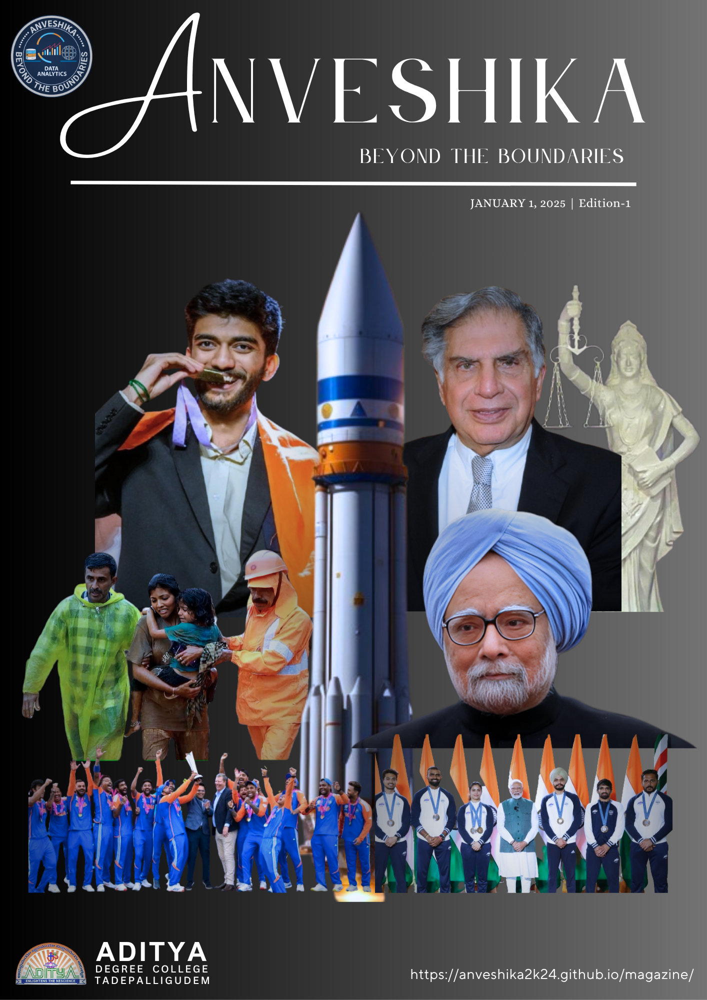

Anveshika Journey

ANVESHIKA Edition 1 opens the first chapter of a bold and inspiring magazine journey, celebrating vision, achievement, innovation, and the spirit of progress. Blending powerful stories, remarkable personalities, and moments of national pride, this edition reflects the essence of going beyond the boundaries to explore ideas that inform, inspire, and leave a lasting impact.

ANVESHIKA Edition 2 unfolds as a powerful tribute to courage, resilience, achievement, and national pride. Centered around Operation Sindoor, this edition captures stories of strength, determination, and extraordinary accomplishments, bringing together inspiring personalities and defining moments that reflect the spirit of rising beyond limits and facing every challenge with purpose.

ANVESHIKA’s January Edition presents a vibrant collection of stories, insights, and innovations from the evolving world of data science and artificial intelligence. From visionary platforms to inspiring individuals and transformative breakthroughs, this edition celebrates curiosity, creativity, and the spirit of learning that drives the future forward.

ANVESHIKA’s February Edition shines a spotlight on the power of data, intelligence, and innovation in shaping tomorrow’s world. Blending insightful ideas with future-focused learning, this edition explores how data-driven thinking, AI, and machine learning are opening new pathways for discovery, growth, and career opportunities in the digital era.

ANVESHIKA’s March Edition highlights the dynamic world of data science through innovation, insights, and analytical breakthroughs. From powerful Python libraries and machine learning essentials to big data applications and advanced SQL strategies, this edition is designed to inform, inspire, and empower learners to explore the future of data-driven technology.